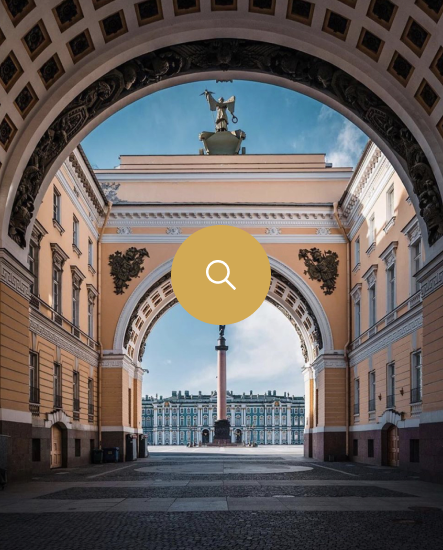
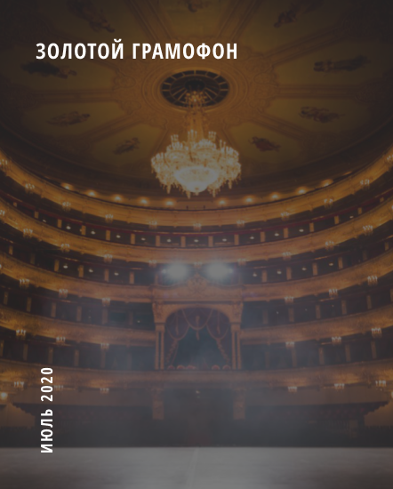
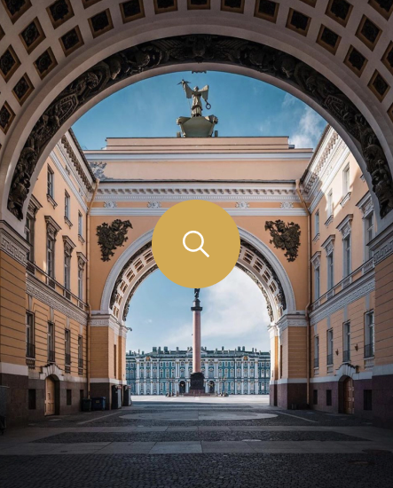
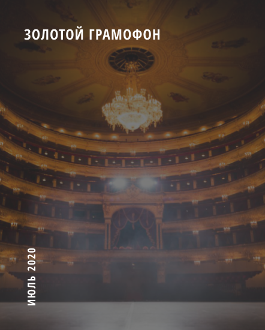

БОЛЬШОЙ ТЕАТР
Большо́й теа́тр — петербургский театр, существовавший в 1784—1886 годах, с 1886 года —
Петербургская консерватория. Первое постоянное в
Санкт-Петербурге, крупнейшее в России и одно
из
крупнейших театральных зданий в Европе XVIII.


 


